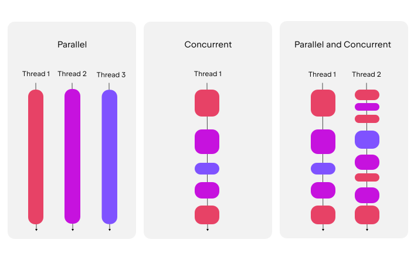
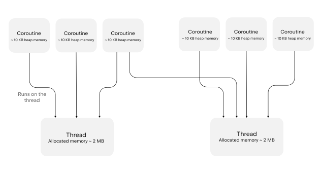

协程基础
为了创建能够同时执行多项任务的应用程序（这一概念称为“并发”），Kotlin 使用了协程。协程是一种可挂起的计算，它允许你以清晰、顺序的风格编写并发代码。协程可以与其他协程同时运行，并且可能并行运行。
在 JVM 和 Kotlin/Native 环境中，所有并发代码（如协程）均在由操作系统管理的线程上运行。协程可以挂起其执行，而不会阻塞线程。这使得一个协程在等待数据到达时可以挂起，而另一个协程可以在同一线程上继续运行，从而确保资源得到有效利用。

有关协程与线程之间差异的更多信息，请参阅 协程与 JVM 线程的比较。
挂起函数
协程最基本的构建块是挂起函数。它允许正在运行的操作暂停并在稍后恢复，而不会影响代码的结构。
要声明一个挂起函数，请使用 suspend 关键字：
suspend fun greet() {
println("Hello world from a suspending function")
}只能从另一个挂起函数中调用挂起函数。要在 Kotlin 应用程序的入口处调用挂起函数，请使用 suspend 关键字标记 main() 函数：
suspend fun main() {
showUserInfo()
}
suspend fun showUserInfo() {
println("Loading user...")
greet()
println("User: John Smith")
}
suspend fun greet() {
println("Hello world from a suspending function")
}此示例尚未使用并发，但通过使用 suspend 关键字标记函数，您可以让它们调用其他挂起函数并在其中运行并发代码。
虽然 suspend 关键字是 Kotlin 核心语言的一部分，但大多数协程功能是通过 kotlinx.coroutines 库提供的。
将 kotlinx.coroutines 库添加到你的项目中
要将 kotlinx.coroutines 库引入您的项目，请根据您使用的构建工具添加相应的依赖配置：
Kotlin
// build.gradle.kts
repositories {
mavenCentral()
}
dependencies {
implementation("org.jetbrains.kotlinx:kotlinx-coroutines-core:1.11.0")
}Groovy
// build.gradle
repositories {
mavenCentral()
}
dependencies {
implementation 'org.jetbrains.kotlinx:kotlinx-coroutines-core:1.11.0'
}Maven
<!-- pom.xml -->
<project>
<dependencies>
<dependency>
<groupId>org.jetbrains.kotlinx</groupId>
<artifactId>kotlinx-coroutines-core</artifactId>
<version>1.11.0</version>
</dependency>
</dependencies>
...
</project>创建您的第一个协程
在 Kotlin 中创建协程需要以下内容：
一个 挂起函数。
一个可供其运行的 协程作用域，例如在
withContext()函数内部。像
CoroutineScope.launch()那样使用 协程构建器 来启动它。使用 调度器 来控制它使用的线程。
让我们看一个在多线程环境中使用多个协程的示例：
-
导入
kotlinx.coroutines库：import kotlinx.coroutines.* -
使用
suspend关键字标记可以暂停和恢复的函数：suspend fun greet() { println("The greet() on the thread: ${Thread.currentThread().name}") } suspend fun main() {} -
添加
delay()函数来模拟一个会暂停的任务，例如获取数据或向数据库写入数据：suspend fun greet() { println("The greet() on the thread: ${Thread.currentThread().name}") delay(1000L) } -
使用
withContext(Dispatchers.Default)为在共享线程池上运行的多线程并发代码定义一个入口点：suspend fun main() { withContext(Dispatchers.Default) { // 在此处添加协程构建器 } } -
使用类似
CoroutineScope.launch()的 协程构建器函数 来启动协程：suspend fun main() { withContext(Dispatchers.Default) { // 此处：CoroutineScope // 使用 CoroutineScope.launch() 在该作用域内启动一个协程 this.launch { greet() } println("The withContext() on the thread: ${Thread.currentThread().name}") } } -
将这些部分组合起来，即可在共享的线程池上同时运行多个协程：
// 导入协程库 import kotlinx.coroutines.* // 导入 kotlin.time.Duration 来表示以秒为单位的时长 import kotlin.time.Duration.Companion.seconds // 定义一个挂起函数 suspend fun greet() { println("The greet() on the thread: ${Thread.currentThread().name}") // 暂停 1 秒，然后释放线程 delay(1.seconds) // 此处的 delay() 函数模拟了一个悬挂式 API 调用 // 你可以在这里添加悬挂式 API 调用，例如网络请求 } suspend fun main() { // 在共享线程池上运行此代码块中的代码 withContext(Dispatchers.Default) { // 此处：CoroutineScope this.launch() { greet() } // 启动另一个协程 this.launch() { println("The CoroutineScope.launch() on the thread: ${Thread.currentThread().name}") delay(1.seconds) // 延迟函数在此处模拟了一个悬挂式 API 调用 // 你可以在这里添加悬挂式 API 调用，例如网络请求 } println("The withContext() on the thread: ${Thread.currentThread().name}") } }
请尝试多次运行该示例。您可能会发现，每次运行程序时，输出顺序和线程名称可能会发生变化，因为操作系统会决定线程的运行时机。
协程作用域与结构化并发
当你在应用程序中运行多个协程时，需要一种方法将它们按组进行管理。Kotlin 协程依赖于一种称为“结构化并发”的原则来提供这种结构。
根据这一原则，协程形成了一个由父任务和子任务组成的、生命周期相互关联的树形层次结构。一个协程的生命周期是指从其创建到完成、失败或被取消期间的状态序列。
父协程会在其子协程全部完成后才结束。如果父协程失败或被取消，其所有子协程也会被递归取消。通过这种方式保持协程之间的关联，使得取消和错误处理变得可预测且安全。
为了保持结构化并发，新的协程只能在定义并管理其生命周期的 CoroutineScope 中启动。该 CoroutineScope 包含协程上下文，其中定义了调度器及其他执行属性。当你在另一个协程内部启动协程时，它会自动成为其父作用域的子协程。
在 CoroutineScope 上调用 协程构建器函数（例如 CoroutineScope.launch()），将启动与该作用域关联的协程的一个子协程。在构建器代码块内，接收者 是一个嵌套的 CoroutineScope，因此在此处启动的任何协程都将成为其子协程。
使用 coroutineScope() 函数创建协程作用域
要使用当前协程上下文创建新的协程作用域，请使用 coroutineScope() 函数。该函数会创建协程子树的根协程。它是块内启动的协程的直接父协程，也是这些协程所启动的任何协程的间接父协程。coroutineScope() 会执行该悬停代码块，并等待该代码块及其内部启动的任何协程全部完成。
以下是一个示例：
// 导入 kotlin.time.Duration 来表示以秒为单位的时长
import kotlin.time.Duration.Companion.seconds
import kotlinx.coroutines.*
// 如果协程上下文未指定调度器，
// CoroutineScope.launch() 将使用 Dispatchers.Default
//sampleStart
suspend fun main() {
// 协程子树的根节点
coroutineScope { // 此处：CoroutineScope
this.launch {
this.launch {
delay(2.seconds)
println("Child of the enclosing coroutine completed")
}
println("Child coroutine 1 completed")
}
this.launch {
delay(1.seconds)
println("Child coroutine 2 completed")
}
}
// 仅在 coroutineScope 中的所有子节点完成后才执行
println("Coroutine scope completed")
}
//sampleEnd由于本例中未指定 调度器，因此 coroutineScope() 代码块中的 CoroutineScope.launch() 构建器函数将继承当前上下文。如果该上下文未指定调度器，则 CoroutineScope.launch() 将使用 Dispatchers.Default，后者在共享线程池上运行。
从协程作用域中提取协程构建器
在某些情况下，您可能希望将协程构建器调用（例如 CoroutineScope.launch()）提取到单独的函数中。
请看以下示例：
suspend fun main() {
coroutineScope { // 此处：CoroutineScope
// 调用 CoroutineScope.launch()，其中 CoroutineScope 是接收者
this.launch { println("1") }
this.launch { println("2") }
}
}coroutineScope() 函数接受一个带有 CoroutineScope 接收者的 lambda 表达式。在此 lambda 表达式内部，隐式接收者为 CoroutineScope，因此像 CoroutineScope.launch() 和 CoroutineScope.async() 这样的构建器函数会针对该接收者解析为 扩展函数。
要将协程构建器提取到另一个函数中，该函数必须声明一个 CoroutineScope 接收器，否则会引发编译错误：
import kotlinx.coroutines.*
//sampleStart
suspend fun main() {
coroutineScope {
launchAll()
}
}
fun CoroutineScope.launchAll() { // 此处：CoroutineScope
// 在 CoroutineScope 上调用。launch()
this.launch { println("1") }
this.launch { println("2") }
}
//sampleEnd
/* -- Calling launch without declaring CoroutineScope as the receiver results in a compilation error --
fun launchAll() {
// 编译错误：此项未定义
this.launch { println("1") }
this.launch { println("2") }
}
*/在此示例中，launchAll() 函数无需 suspend 关键字，因为它仅在当前 CoroutineScope 中启动协程，然后立即返回。仅当函数在返回前需要暂停和恢复时，才应使用 suspend 标记它们。
协程构建器函数
协程构建器函数是一种接受 suspend lambda 并定义要运行的协程的函数。以下是一些示例：
协程构建函数需要一个 CoroutineScope 作为运行环境。这可以是现有的作用域，也可以是你使用 coroutineScope()、runBlocking() 或 withContext() 等辅助函数创建的作用域。每个构建函数都定义了协程的启动方式以及如何与其结果进行交互。
CoroutineScope.launch()
CoroutineScope.launch() 协程构建函数是 CoroutineScope 的扩展函数。它会在现有的 协程作用域 范围内启动一个新的协程，而不会阻塞该作用域的其余部分。
当不需要结果或不想等待结果时，可使用 CoroutineScope.launch() 与其他任务并行执行：
// 导入 kotlin.time.Duration，以便以毫秒为单位表示时长
import kotlin.time.Duration.Companion.milliseconds
import kotlinx.coroutines.*
suspend fun main() {
withContext(Dispatchers.Default) {
performBackgroundWork()
}
}
//sampleStart
suspend fun performBackgroundWork() = coroutineScope { // 此处：CoroutineScope
// 启动一个不会阻塞当前作用域的协程
this.launch {
// 暂停以模拟后台任务
delay(100.milliseconds)
println("Sending notification in background")
}
// 当前协程在前一个协程暂停时继续运行
println("Scope continues")
}
//sampleEnd运行此示例后，你会发现 main() 函数不会被 CoroutineScope.launch() 阻塞，并在协程在后台运行时继续执行其他代码。
CoroutineScope.async()
CoroutineScope.async() 协程构建器函数是 CoroutineScope 的扩展函数。它在现有的 协程作用域 内部启动并发计算，并返回一个 Deferred 句柄，该句柄表示最终结果。使用 .await() 函数将代码挂起，直到结果准备就绪：
// 导入 kotlin.time.Duration，以便以毫秒为单位表示时长
import kotlin.time.Duration.Companion.milliseconds
import kotlinx.coroutines.*
//sampleStart
suspend fun main() = withContext(Dispatchers.Default) { // 此处：CoroutineScope
// 开始下载第一页
val firstPage = this.async {
delay(50.milliseconds)
"First page"
}
// 并行开始下载第二页
val secondPage = this.async {
delay(100.milliseconds)
"Second page"
}
// 等待两者的结果并进行比较
val pagesAreEqual = firstPage.await() == secondPage.await()
println("Pages are equal: $pagesAreEqual")
}
//sampleEndrunBlocking()
runBlocking() 协程构建函数会创建一个协程作用域，并阻塞当前的 线程，直到该作用域中启动的协程结束。
仅当无法通过其他方式从非挂起代码中调用挂起代码时，才应使用 runBlocking()：
import kotlin.time.Duration.Companion.milliseconds
import kotlinx.coroutines.*
// 无法更改的第三方接口
interface Repository {
fun readItem(): Int
}
object MyRepository : Repository {
override fun readItem(): Int {
// 通向挂起函数的桥梁
return runBlocking {
myReadItem()
}
}
}
suspend fun myReadItem(): Int {
delay(100.milliseconds)
return 4
}协程 调度器
协程 调度器 控制协程在执行时使用哪个线程或线程池。协程并不总是与单个线程绑定。根据调度器的不同，它们可以在一个线程上暂停，并在另一个线程上恢复。这使得您可以同时运行多个协程，而无需为每个协程分配单独的线程。
调度器与 协程作用域 协同工作，共同决定协程何时运行以及在何处运行。协程作用域控制着协程的生命周期，而调度器则控制用于执行的线程。
kotlinx.coroutines 库为不同的使用场景提供了多种调度器。例如，Dispatchers.Default 在共享的线程池上运行协程，在后台执行任务，与主线程分离。这使其成为数据处理等 CPU 密集型操作的理想选择。
要为 CoroutineScope.launch() 这样的协程构建器指定调度器，请将其作为参数传递：
suspend fun runWithDispatcher() = coroutineScope { // 此处：CoroutineScope
this.launch(Dispatchers.Default) {
println("Running on ${Thread.currentThread().name}")
}
}或者，你可以使用 withContext() 代码块，将其中的所有代码在指定的调度器上运行：
// 导入 kotlin.time.Duration，以便以毫秒为单位表示时长
import kotlin.time.Duration.Companion.milliseconds
import kotlinx.coroutines.*
//sampleStart
suspend fun main() = withContext(Dispatchers.Default) { // 此处：CoroutineScope
println("Running withContext block on ${Thread.currentThread().name}")
val one = this.async {
println("First calculation starting on ${Thread.currentThread().name}")
val sum = (1L..500_000L).sum()
delay(200L)
println("First calculation done on ${Thread.currentThread().name}")
sum
}
val two = this.async {
println("Second calculation starting on ${Thread.currentThread().name}")
val sum = (500_001L..1_000_000L).sum()
println("Second calculation done on ${Thread.currentThread().name}")
sum
}
// 等待两项计算完成，并打印结果
println("Combined total: ${one.await() + two.await()}")
}
//sampleEnd如需进一步了解协程调度器及其用途（包括 Dispatchers.IO 和 Dispatchers.Main 等其他调度器），请参阅 协程上下文与调度器。
协程与 JVM 线程的比较
虽然协程是可暂停的计算单元，能像 JVM 上的线程一样并发执行代码，但它们在底层的工作原理却有所不同。
线程由操作系统管理。线程可以在多个 CPU 核心上并行执行任务，是 JVM 上实现并发的一种标准方式。创建线程时，操作系统会为其栈分配内存，并通过内核在不同线程之间进行切换。这使得线程功能强大，但也消耗大量资源。每个线程通常需要几兆字节的内存，而且JVM通常一次只能处理几千个线程。
另一方面，协程并不绑定到特定的线程上。它可以在一个线程上挂起，并在另一个线程上恢复，因此多个协程可以共享同一个线程池。当协程挂起时，线程不会被阻塞，仍可自由地执行其他任务。这使得协程比线程轻量得多，并允许在一个进程中运行数百万个协程，而不会耗尽系统资源。

让我们看一个示例：50,000 个协程，每个协程等待五秒钟，然后输出一个句点 (.)：
import kotlin.time.Duration.Companion.seconds
import kotlinx.coroutines.*
suspend fun main() {
withContext(Dispatchers.Default) {
// 启动 50,000 个协程，每个协程等待五秒，然后输出一个句点
printPeriods()
}
}
//sampleStart
suspend fun printPeriods() = coroutineScope { // 此处：CoroutineScope
// 启动 50,000 个协程，每个协程等待五秒，然后输出一个句点
repeat(50_000) {
this.launch {
delay(5.seconds)
print(".")
}
}
}
//sampleEnd现在，让我们看一个使用 JVM 线程实现的相同示例：
import kotlin.concurrent.thread
fun main() {
repeat(50_000) {
thread {
Thread.sleep(5000L)
print(".")
}
}
}运行此版本会消耗更多内存，因为每个线程都需要自己的内存栈。对于 50,000 个线程，内存消耗可能高达 100 GB，而相同数量的协程仅需大约 500 MB。
根据您的操作系统、JDK 版本和设置不同，JVM 线程版本可能会抛出内存不足错误，或者放缓线程创建速度，以避免同时运行过多的线程。
下一步
协程指南
Kotlin 的标准库仅提供了最基本的低级 API，以便其他库能够利用协程。与许多具有类似功能的其他语言不同，async 和 await 在 Kotlin 中并非关键字，甚至不属于其标准库的一部分。此外，与 Futures 和 Promises 相比，Kotlin 的“挂起函数”概念为异步操作提供了一种更安全、更不易出错的抽象。
kotlinx.coroutines 是由 JetBrains 开发的一个功能丰富的协程库。它包含许多本指南将介绍的高级协程支持的原始类型，包括 launch、async 等。
本指南介绍了 kotlinx.coroutines 的核心功能，并配有一系列示例，内容按不同主题进行划分。
为了使用协程并按照本指南中的示例操作，您需要按照项目 README 中的内容中的说明添加对kotlinx-coroutines-core模块的依赖。